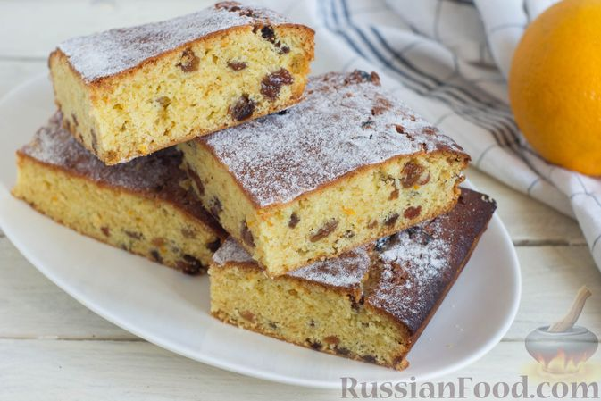

Кулинарные рецепты!
Сырный крем-суп с шампиньонами:

Сырный крем-суп с шампиньонами - нежное первое блюдо, которое просто влюбляет в себя с первой ложки. Готовится суп проще простого, результат порадует вас и всю вашу семью. Добавление сливочного сыра и сливок делают свое дело, утонченный привкус просто завораживает. Подробнее
Постный апельсиновый пирог с изюмом и корицей:
- Мука пшеничная - 250г
- Апельсины - 2 шт
- Сахар - 150 г
- Масло растительное - 100 г
- Разрыхлитель - 2 ч. ложки
- Изюм - 100 г
- Корица молотая - 1/2 ч. ложки
- Подготовьте необходимые продукты.Изюм и апельсины предварительно промойте и обсушите.Включите духовку для разогрева до 180 градусов.
- Влейте растительное масло, перемешайте.
- Добавьте молотую корицу. Перемешайте до получения однородного теста. Выложите в тесто изюм. Перемешайте.
- Форму для выпечки застелите пергаментной бумагой. Моя форма - со стороной 18 см по внутренней кромке. Переложите тесто в форму. Поставьте форму с тестом в разогретую до 180 градусов духовку на 35-40 минут.
| Кислые щи с пельменями | |
| Пельмени замороженные | 300 г |
| Капуста квашеная | 150 г |
Рецептов много, самые вкусные рецепты у нас.это просто настоящая находка кулинара. Пошаговые рецепты с фото. Домашние рецепты, которые легко приготовить. Кулинарные советы как приготовить любое блюдо. Советы что приготовить по любому поводу. Праздничные рецепты на любой праздничный стол. Рецепты для мультиварки. Все заготовки на зиму. Диеты и постный стол. Кулинарные новости и события.